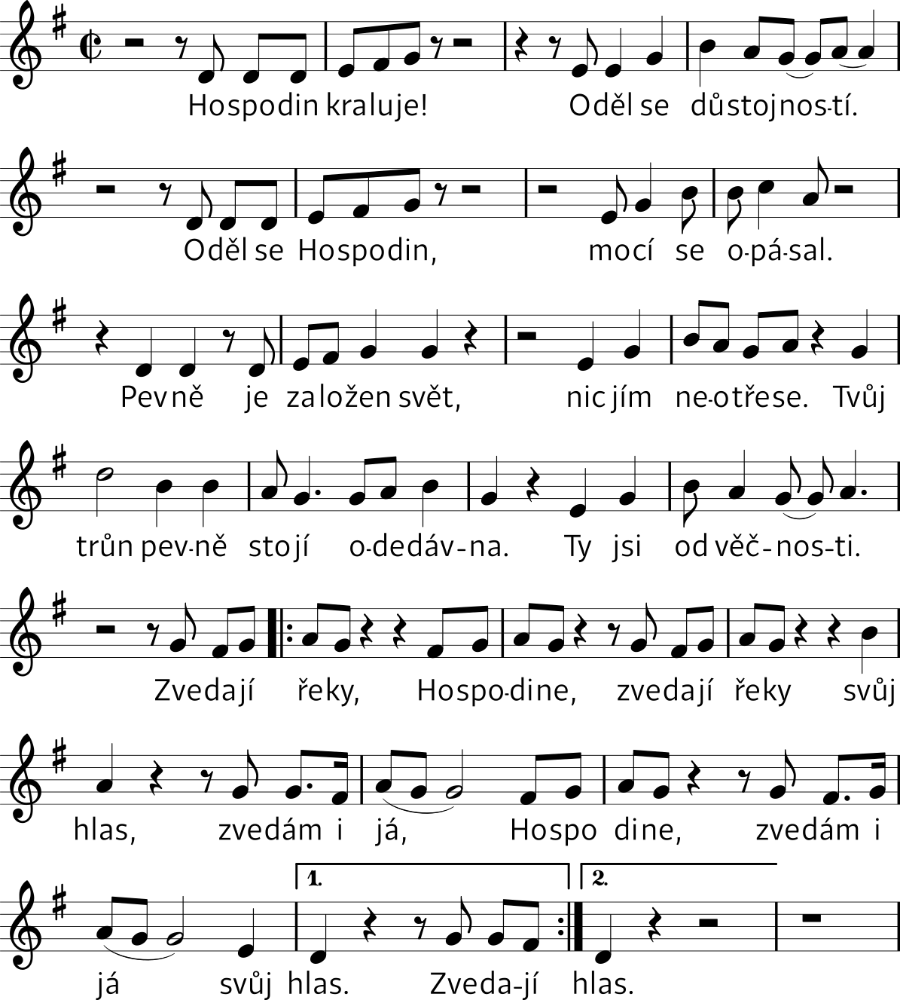

Nešpory
Bože, pospěš mi na pomoc.
Slyš naše volání.
Sláva Otci i Synu i Duchu Svatému,
jako byla na počátku, i nyní i vždycky a na věky věků. Amen. Aleluja.
HYMNUS
TN: Jiřina Gina Čunková (Koi 176)
1. Hospodin kraluje,
oděl se důstojností,
oděl se Hospodin,
mocí se opásal.
2. Pevně je založen svět,
nic jím neotřese,
tvůj trůn pevně stojí odedávna,
ty jsi od věčnosti.
R. Zvedají řeky, Hospodine,
zvedají řeky svůj hlas.
Zvedám i já, Hospodine,
zvedám i já svůj hlas.
ŽALMY
1. ant. Od Ducha Svatého bylo Simeonovi zjeveno, že neuzří smrt, dokud neuvidí Pánova Mesiáše.
1Hospodin řekl mému Pánu: †
„Seď po mé pravici, *
dokud nepoložím tvé nepřátele za podnož tvým nohám.“
2Žezlo moci ti podává Hospodin ze Siónu: *
„Panuj uprostřed svých nepřátel!
3Ode dne zrození je ti určeno vládnout v posvátném lesku: *
zplodil jsem tě jako rosu před jitřenkou.“
4Hospodin přísahal a nebude toho litovat: *
„Ty jsi kněz navěky podle řádu Melchizedechova!“
5Hospodin je po tvé pravici, *
potře krále v den svého hněvu.
7Cestou se napije z potoka, *
proto povznese hlavu.
Sláva Otci i Synu *
i Duchu Svatému,
jako byla na počátku, i nyní i vždycky *
a na věky věků. Amen.
Ant. Od Ducha Svatého bylo Simeonovi zjeveno, že neuzří smrt, dokud neuvidí Pánova Mesiáše.
2. ant. Přinesli Hospodinu oběť, jak to nařízeno v Zákoně: pár hrdliček nebo dvě holoubata.
1Z hlubin volám k tobě, Hospodine, *
Pane, vyslyš můj hlas!
2Tvůj sluch ať je nakloněn *
k mé snažné prosbě!
3Budeš-li uchovávat v paměti viny, Hospodine, *
Pane, kdo obstojí?
4Ale u tebe je odpuštění, *
abychom ti mohli v úctě sloužit.
5Doufám v Hospodina, *
duše má doufá v jeho slovo,
6má duše čeká na Pána *
více než stráže na svítání.
Více než stráže na svítání *
7ať čeká Izrael na Hospodina,
neboť u Hospodina je slitování, *
hojné je u něho vykoupení.
8On vykoupí Izraele *
ze všech jeho provinění.
Sláva Otci i Synu *
i Duchu Svatému,
jako byla na počátku, i nyní i vždycky *
a na věky věků. Amen.
Ant. Přinesli Hospodinu oběť, jak to nařízeno v Zákoně: pár hrdliček nebo dvě holoubata.
3. ant. „Moje oči uviděly tvou spásu, kterou jsi připravil pro všechny národy.“
Srov. Kol 1,12-20
12Radostně děkujme Bohu Otci, *
že nás uschopnil k účasti na dědictví svatých ve světle.
13On nás totiž vytrhl z moci temnoty *
a uvedl do království svého milovaného Syna.
14V něm máme vykoupení *
a odpuštění hříchů.
15On je obraz neviditelného Boha, *
prvorozený všeho stvoření.
16V něm bylo všechno stvořeno: *
věci na nebi i na zemi, svět viditelný i neviditelný:
ať jsou to Trůny, ať jsou to Panstva, *
ať jsou to Knížata, ať jsou to Mocnosti.
Všechno je stvořeno skrze něho *
a pro něho.
17On předchází všechno *
a všechno trvá v něm.
18A On je hlava těla, *
to je církve.
On je počátek, prvorozený z mrtvých, *
ve všem zaujal prvenství.
19Veškerá plnost se sama rozhodla *
v něm přebývat,
20a skrze něho usmířit všechno se sebou †
jak na nebi, tak na zemi *
tím, že krví jeho kříže zjedná pokoj.
Sláva Otci i Synu *
i Duchu Svatému,
jako byla na počátku, i nyní i vždycky *
a na věky věků. Amen.
Ant. „Moje oči uviděly tvou spásu, kterou jsi připravil pro všechny národy.“
KRÁTKÉ ČTENÍ
Žid 4, 14-16
Máme u Boha mocného prostředníka, jeho Syna Ježíše. Pevně se ho držme. Je schopen s námi spoluprožívat naše slabosti, protože procházel stejným pokušením jako my, ale nedal se jím nikdy svést k hříchu. Proto směle přistupme k Bohu, který nás miluje, abychom dosáhli smilování a nalezli pomoc v čas tísně.
ZPĚV PO KRÁTKÉM ČTENÍ
N: J. Gałuszka OP; T: Bodnár OP (Koi 90a)
Ó, Bože, světlo naše, je důstojné Tě chválit, Otce, Syna i Ducha Svatého.
Ó, Bože, světlo naše, celý vesmír se Ti klaní, Otci, Synu i Duchu Svatému.
KANTIKUM PANNY MARIE
Antifona ke kantiku Panny Marie: Dnes Panna Maria uvedla Ježíše do Chrámu; a Simeon, naplněn Duchem Svatým, vzal ho do náručí a velebil Boha.
T: paraf. Magnificat; N: roráty, 16. století (K 813B)
1. Velebí má duše s jásotem, radostí
Pána věčné spásy, který dnes z výsosti
pohlédl k své dívce
pokorného srdce v lásce a milosti.
2. Již od této chvíle zástupy národů
v neustálé chvále po světa obvodu
slaviti mě budou,
dívku Páně chudou, v radostném závodu.
3. Veliké mi věci Hospodin učinil,
Pán můj nejvýš svatý ve mně si zalíbil.
Duši bohabojné
dary nebes hojné od věků připravil.
4. Ramenem své moci on pyšné rozptýlil,
sesadil i mocné, pokorné povýšil.
Sytí všechny lačné,
bohaté a pyšné s prázdnou pryč propustil.
5. V lásce své se ujal národa svatého,
pamětliv je slibu praotcům daného,
že z Judova rodu
přijde spása lidu od Boha věčného.
Ant. Dnes Panna Maria uvedla Ježíše do Chrámu; a Simeon, naplněn Duchem Svatým, vzal ho do náručí a velebil Boha.
PROSBY
pro díky: Díky tobě, Pane.MODLITBA PÁNĚ
Otče náš, jenž jsi na nebesích,
posvěť se jméno tvé.
Přijď království tvé.
Buď vůle tvá jako v nebi, tak i na zemi.
Chléb náš vezdejší dej nám dnes.
A odpusť nám naše viny,
jako i my odpouštíme našim viníkům.
A neuveď nás v pokušení,
ale zbav nás od zlého.
Neboť tvé je království i moc i sláva navěky.
MODLITBA
Všemohoucí, věčný Bože, tvůj jednorozený Syn se stal člověk a jako jeden z nás byl uveden do Chrámu; my si to dnes připomínáme a pokorně prosíme: očisti naše nitro, abychom mohli předstoupit před tebe. Skrze tvého Syna Ježíše Krista, našeho Pána, neboť on s tebou v jednotě Ducha Svatého žije a kraluje po všechny věky věků.
SALVE REGINA
Zdrávas, Královno; T: asi Heřman z Reichenau, 11. století; N: chorál (MZ 1001)
Salve, Regina, * mater misericordiæ,
vita dulcedo et spes nostra, salve.
Ad te clamamus, exules, fílii Hevæ.
Ad te suspiramus, gementes et flentes in hac lacrimarum valle.
Eia ergo, advocata nostra, illos tuos misericordes oculos ad nos converte.
Et Iesum, benedictum fructum ventris tui, nobis post hoc exilium ostende.
O clemens, o pia, o dulcis Virgo Maria.